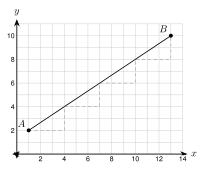
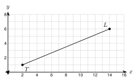

1. Find 25 of 30.
2. Find the midpoint of (2, 6) and (10, −2).
3. Solve 2(x + 4) = 3x − 1.
k = 33 + 1 = 3.
The distance is 20 − 4 = . 34 · 16 = .
The point is 4 + 12 = . Check: from 4 to 16 is 12, and from 16 to 20 is 4. The ratio is 12:4 = 3:1.

k = 11 + 3 = . Run: 13 − 1 = . Rise: 10 − 2 = .
P = (1 + 14(12), 2 + 14(8)) = (1 + , 2 + ) = (, ).
Run: 7 − (−3) = 10. Rise: −5 − 5 = .
P = (−3 + 25(10), 5 + 25(−10)) = (−3 + , 5 + ) = (, ).
k = 25. Run = 10 and rise = 10.
P = (−4 + 4, −2 + 4) = (, ).
From A to B: k = 34. Run 8, rise 4. P = (1 + 6, 1 + 3) = (, ).
From B to A: start at B. Run 1 − 9 = −8, rise 1 − 5 = −4. Q = (9 + 34(−8), 5 + 34(−4)) = (, ).
P is near B. Q is near A. They are different points on the same segment.

Run 12, rise 5. R = (2 + 25(12), 1 + 25(5)) = (2 + , 1 + ) = (, ).
TL = 122 + 52 = miles.
TR = 4.82 + 22 = 27.04 = miles. And 25 · 13 = 5.2. It matches.
RL = 7.22 + 32 = 60.84 = 7.8 miles. 5.2 + 7.8 = 13 and 5.2 : 7.8 = 2 : 3. It checks.
1. For a ratio a:b, the point is aa + b of the way. This is a of the segment.
2. Find the and the . Take the fraction of each and add to the start.
3. matters: from A to B is not the same as from B to A.
4. Check with .
1. 14 of the way from 0 to 20
2. 35 of the way from −10 to 15
3. Ratio 1:2 from 3 to 15
4. Ratio 2:3 from −6 to 14
5. A(0, 0), B(12, 8), 14
6. A(0, 0), B(12, 8), 34
7. A(2, −4), B(8, 11), 13
8. A(−5, 3), B(5, −7), 310
9. A(1, 1), B(−9, 6), 25
10. A(−6, 2), B(6, 14), ratio 1:3
11. A(−6, 2), B(6, 14), ratio 1:2
12. A(4, −3), B(−6, 7), ratio 3:2
13. A(0, 5), B(15, −10), ratio 2:1
14. A(1, −2) and B(11, 8). Find the point P that divides AB in the ratio 3:2 from A to B. Then find the point Q that divides it in the ratio 3:2 from B to A.
15. A trail runs from (0, 0) to (20, 15). Each unit is 1 mile. A water station is 15 of the way from the start. Find its position. Check with the distance formula.
16. A bridge deck goes from (0, 10) to (24, 6). A support divides the deck in the ratio 3:1 from the left end. Find where the support is.
17. Is P(4, 2) the point 13 of the way from A(1, −1) to B(10, 8)? Use distances to check.
18. Samir says the point that divides a segment in the ratio 2:3 is 23 of the way from the start. What is wrong? What fraction is correct?
19. Point P lies on segment AB. Point A is (−4, 2) and point B is (8, −10). Point P is 13 of the way from A to B. What are the coordinates of P?
A. (0, −2)
B. (4, −6)
C. (−2, 0)
D. (2, −4)
20. Segment MN has endpoints M(2, 5) and N(14, −1). Point Q divides segment MN in the ratio 2:1 from M to N. What are the coordinates of Q?
A. (6, 3)
B. (10, 1)
C. (8, 2)
D. (12, 0)
21. In what ratio does the point (3, 5) divide the segment from A(1, 1) to B(6, 11) from A to B?